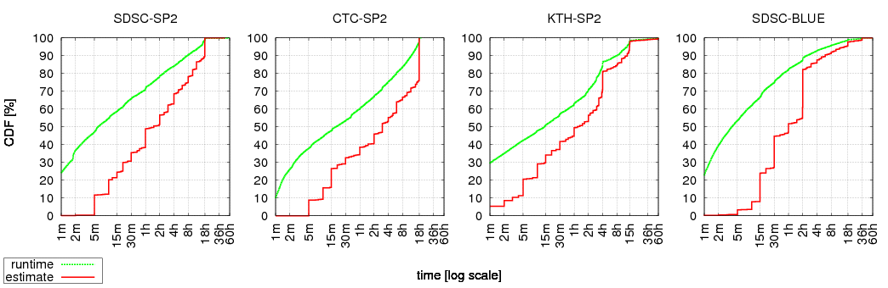
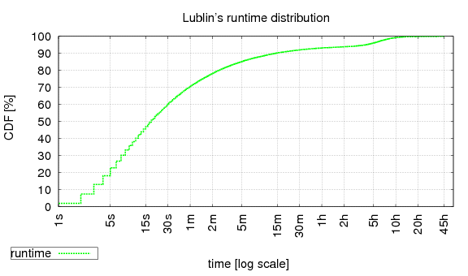
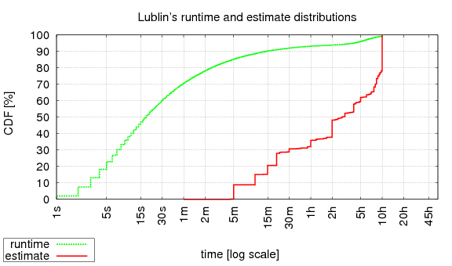
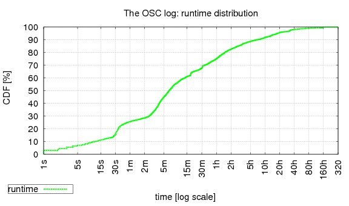
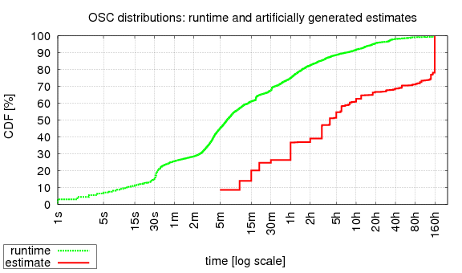

Quick how-to
A C++ program and API to artificially generate a distribution of user
runtime estimates, and optionally append the generated estimates to an
existing
Standard Workload Format (SWF) file (which in turn can be either
a real log or generated by some other model).
This model is the result of the paper
Modeling User Runtime Estimates
published in JSSPP'05
[tsafrir05b].
| # | ||
| 1 | download this tar file | est.tgz |
| 2 | open the tar and compile code | tar -xvzf est.tgz cd m_tsafrir05 make |
| 3 | run the program and follow the instructions; you may found the examples below helpful |
./est_driver |
| 1 | Dan Tsafrir, Yoav Etsion, and Dror G. Feitelson, ``Modeling User Runtime Estimates''. In 11th Workshop on Job Scheduling Strategies for Parallel Processing (JSSPP), pp. 1-35, Jun 2005. Lecture Notes in Computer Science Volume 3834. |
| 2 | Dan Tsafrir, Yoav Etsion, and Dror G. Feitelson, ``A Model/Utility for Generating User Runtime Estimates and Appending Them to a Standard-Workload-Format File''. URL http://www.cs.huji.ac.il/labs/parallel/workload/m_tsafrir05 |
Introduction:
Runtime estimates provided by users to schedulers of parallel machines
have the unfortunate property of worsening performance.
Therefore, in order to get realistic performance evaluation results,
one must use realistic estimates, as provided by the model suggested
here.
All the details that explain why user estimates are so bad for
performances along with justifying the model suggested here are found
in the paper that accompanies this model titled
"Modeling User Runtime Estimates"
[tsafrir05b].
This document provides a brief overview about the available files, how
to use the model, and how to choose its parameters.
The file est.tgz contains all the files that compose the estimate-model utility. These are:
| 1 | est_model.hh, est_model.cc | The API of the model (only 2 functions; described below) and its implementation. |
| 2 | est_swf_job.hh | Defines the Job_t structure that encapsulates a single SWF-file record, and knows how to read/write it. |
| 3 | est_driver.cc | A simple shell utility to generate an estimate distribution and optionally combines it with an existing SWF-file. Contains the main function of the utility and can be viewed as an example of how to use the model's API. |
| 4 | est_parse.hh, est_parse.cc | Used by the shell utility to parse its command line arguments and optionally an SWF-file. |
| 5 | Makefile | Compiles the above and generates the est_driver utility. | 6 | Est05JSSPP.pdf | The paper that explains this model and its rationale. | 7 | index.html | This file. |
SYNOPSIS
est_driver <maxest> <njobs|swf> [-b<userbins>] [-p<precision>] [-s<seed>]
PARAMETERS
| maxest [mandatory] |
The maximal allowed estimate in seconds. If appending estimates
to an
SWF-file, this is also the maximal allowed runtime (as job are
killed if they exceed their estimate) and therefore all runtimes
that are bigger than maxest will be truncated to be exactly
maxest.
On how exactly to choose this value, see below. |
| njobs | swf [mandatory] |
The second parameter is either njobs or swf:
njobs: means "number of jobs". This must be a positive integer that indicates the number of estimates that the model must produce. If njobs is used then the resulting output would be the estimates distribution (in a PDF and CDF form). swf: this is a name of an SWF-file. If swf is given then (1) njobs is taken to be the number of jobs within the swf, (2) the swf is parsed, (3) artificial estimates are added to it, and (4) the swf is reprinted with the new estimates. |
| userbins [optional] |
A user-specified list of estimate bins composed of
comma-separated pairs of the form seconds=percent e.g.
3600=10.5,300=2.2 means 10.5% of the jobs will be set to
use 1 hour as estimate (3600 sec) and 2.2% of the jobs will
be set to use 5 minutes estimate (300 seconds).
Though not mandatory, this option is especially important
because it allows the user to associate maxest with the
amount of jobs that use it. This is important because:
|
| precision [optional] | In case an swf file is given (which means it is reprinted with artificial estimates), this parameter (a nonnegative integer) determines the number of precision digits in the output, that is, the number of decimal digits to the right of the floating point, in all the SWF fields that have a floating-point nature (e.g. runtime, used-memory, etc). The default is 0. |
| seed [optional] | The seed for the random number generator used (using the drand48 family). Default is 0. |
EXAMPLES
| 1 | est_driver 64800 l_ctc_sp2.swfReads the CTC-SP2 log, replaces the original user estimates with artificial estimates generated by the model (using its default settings) and prints the resulting SWF file. The maximal value of generated estimates is set to be 18 hours (64800 seconds). Indeed this was administrative maximal value of runtimes and estimates in the CTC-SP2 site. The maximal allowed value relates both for runtimes and for estimates, as users are not allowed to provide estimates that are bigger than the maximal allowed runtime. However, it is almost always the case that a few jobs have runtimes that are bigger than the maximal value allowed. Usually, the difference between the actual runtime and the maximal value is less than one minute, and probably reflects the time it takes to kill a job that exceeded its runtime. But on very rare occasions, the difference is much bigger (probably because the system administrator explicitly allowed these jobs to continue running beyond their runtime estimates). Regardless of the reason, if a job's runtime is bigger than the maximal allowed value (=maxest, the current model truncates the runtime of the job to be exactly maxest). |
| 2 | est_driver 64800 l_ctc_sp2.swf -b 64800=23.8 -s 2Same as in th previous example, but now 23.8% of the jobs are assigned with an estimate of 18 hours (64800 seconds). Indeed, in the original CTC-SP2 trace file, 23.8% of the jobs are associated with a user estimates of 18h. The default settings of this model (used in the previous example) associates around 22% of the jobs with the maximal estimate. The seed for the random number generator used by the model is set to be 2. A different seed will results in a different artificial distribution of user runtime estimates. |
| 3 | est_driver 129600 l_sdsc_blue.swf -b 129600=1.1,7200=27.3This is similar to the above example: here we use a maximal estimate value of 36h (129,600 seconds) for the SDSC-BLUE log and instruct the model to associate only 1.1% of the jobs with this value, while associating 27.3% of the jobs with a smaller estimate of 2h (7200 seconds). Indeed, the SDSC-BLUE log is somewhat different than usual: the number of jobs associated with the maximal estimate is very small. The reason for this abnormality is that the "real" (or "de-facto") maximal estimate of this log is 2h, as this is the runtime upper bound of jobs submitted to the "express" and "interactive" queues of the the SDSC BLUE Horizon machine, that are used by most jobs. Note that in order to change the "effective" maximal estimate of a log from maxest to a smaller value (let this value be denoted E), it is not enough to instruct the model to associate a lot of jobs with E (e.g. in the above example "-b 7200=27.3" is insufficient) because, unless instructed otherwise, the model will always associate very many jobs with maxest. Therefore, we must explicitly indicate that we want the effective maximal value to be changed by associating this value with a small number of jobs. Indeed, in the SDSC-BLUE log, only 1.1% of the jobs are associated with the maximal value, whereas 27.3% of the jobs are associated with the maximal value of the two high priority queues, which is E=2h. |
API:
The above describes how to generate an estimate distribution using the
shell utility est_driver. However, it also very easy (and
provides more control over model parameters) to use this model as a
C++ module and invoke its functions directly.
The model's interface is composed of only two functions that use three
structure types, all defined in est_model.hh (with the exception of the first
structure).
Here is the specification of the interface:
| 1 |
struct Job_t {
int id;
int submit;
int wait;
int runtime;
// all the rest of the SWF fields...
};
typedef std::vector<Job_t> SWF_t;
|
The Job_t structure encapsulates all 18 data fields of
one job (=line =record) within an
SWF-file.
This structure is defined in
est_swf_job.hh.
When assigning user estimates to an existing SWF-file, the latter is represented using a standard vector of Job_t-s. (We denote this vector type as SWF_t, for the purpose of explaining the interface here; but the type std::vector<Job_t> is directly used within est_model.hh.) Though not part of the interface, you can use the very short function in est_parse.cc called parse_swf(), that given a name of an SWF-file, easily and efficiently parses the file and generates the associated SWF_t job vector. |
||||||
| 2 |
struct EstBin_t {
int time; // estimate in seconds
int njobs; // # of jobs using it
};
typedef std::vector<EstBin_t> Dist_t;
|
This structure represents one "bin" in the estimate histogram:
the time field holds the estimate value (in seconds) and
the njobs field specifies the number of jobs that have
time as their user estimate.
To represent the entire estimate distribution we use a standard vector of EstBin_t-s. (We denote this vector type as Dist_t, for the purpose of explaining the interface here; but the type std::vector<EstBin_t> is directly used within est_model.hh.) |
||||||
| 3 |
struct EstParams_t {
// model parameters
...
// constructor
EstParams_t(
int njobs,
int maxest,
Dist_t userbins=Dist_t() );
};
|
The are more than a dozen parameters for the estimate model
(encapsulated within the EstParams_t structure).
However, the constructor of EstParams_t accepts only
the most important ones (2 mandatory, one optional):
|
||||||
| 4 |
void
est_gen_dist(EstParams_t params,
Dist_t* est_dist);
|
Given params (specifies the model parameters), assign the generated estimate distribution into the place pointed to by est_dist (a pointer to some preallocated vector). | ||||||
| 5 |
void
est_assign(const Dist_t& est_dist,
SWF_t* jobs);
|
Given est_dist (an estimate distribution generated by the function est_gen_dist()) and jobs (a pointer to a vector that holds the content of some SWF-file with njobs records), randomly assign the artificial estimates as embodied by est_dist into the jobs, such that the estimate of each job is equal to or bigger than the runtime of that job. |
BACKGROUND
In order to correctly choose the main parameters of the model, you must be aware of two simple facts:
This is exemplified in the following figure that shows the cumulative distribution function (CDF) of runtimes and estimates, in 4 different production systems.

The Y-axis shows the percent of jobs that are associated with a value that is equal to or smaller than the corresponding X-value. For example, in KTH, ~30% of the jobs have runtime <= 1m (one minute) and ~6% of the jobs have 1m estimate. The estimate curves look like a staircase because of the modal nature of human approximations. The larger the stair is, the more popular the associated estimate, e.g., in SDSC-SP2 ~10% of the jobs use estimate=5m; in SDSC-BLUE ~27% of the job use estimate=2h. Note that the fact estimate-curves are lower than runtime-curves indicates runtimes are shorter than estimates (which is only natural as jobs are killed once their estimate is reached).Recall maxest is usually the most popular estimate. This is also true for KTH and BLUE, despite appearances. In KTH, maxest is actually 4h during weekdays (and 15h during weeknights, and 60h during weekends). In BLUE, as mentioned earlier, the maxest of the "express" and "interactive" queues (used by most jobs) is 2h:
| property | logs 1 | ||||||||||||||
| SDSC-SP2 | CTC-SP2 | KTH-SP2 | SDSC-BLUE | ||||||||||||
| maxest | 18h | 18h |
|
|
|||||||||||
| % of jobs | 9.7% | 23.8% | 10.1% 2 | 27.3% 3 , 4 | |||||||||||
| popularity rank |
3 | 1 | 1 | 1 | |||||||||||
Note that even though maxest is the upper bound of both estimates and runtimes, there's usually a very small fraction of the jobs with runtimes that exceed this limit. Mostly, the limit is exceeded by less than a minute, and probably reflects the time it takes to kill the job. However, on rare occasions, the runtime is much longer (e.g. in SDSC-SP2 there's a job with runtime > 100h). The reason for this phenomenon is unknown, but we speculate that such jobs were explicitly given special treatment by the system administrators. Regardless of the reason, this observation is important when determining the value of maxest that is supplied to the model (see below).
Modality in general and the vast popularity of maxest in particular are very unfortunate. Modality is bad because all jobs look the same in the eyes of the scheduler, which means it has less opportunities to exploit existing "holes" in the schedule for backfilling. The popularity of maxest is even worse, as jobs that use this estimate are never backfilled (except from on the expense of the "extra nodes" [mualem01]), they are simply (appearing to be) too long.
Finally, note that the percent of jobs associated with maxest exhibits very high variance. The good news is that this is where most of the variance is concentrated, and setting this difference aside, the estimate distributions of different logs are remarkably similar [tsafrir05b]. Indeed, if the model is supplied with this information (% of jobs associated with maxest), the estimate distribution it produces is very similar to that of the original.
GUIDANCE IN CHOOSING PARAMETERS
Due to the reasons mentioned above, the most significant parameters of the model are (1) the mandatory maxest, and (2) the optional percent of jobs that are associated with it (can be specified using the -b option). Let this percent be denoted as P.
How to choose P: The bigger P is, the worse the performance gets. At the extreme, P=100%, in which case backfilling activity completely stops (with the exception of "extra nodes" backfilling [mualem01]). The scheduling then becomes relatively similar to FCFS. The default settings of this model sets P to be ~22%. This is a compromise between the P values listed in the above table and is inclined towards the bigger values, so that the model will be closer to the worst case. However, as can be seen, the situation in CTC-SP2 and SDSC-BLUE is worse. You can allow the model to use the its compromise value, or you can make it better (smaller) or worse (bigger), depending on the focus of your interest.
How to choose maxest:
When we're appending estimates to a log (that lacks this data) which
was generated by a production system, the best alternative is to find
out what was this site's administrative upper bound on runtimes, and use
this value as maxest.
If this information is unavailable, one should examine the runtime
CDF of the log, as plotted in the above figure, and approximate the
upper bound.
Note that, as explained above, simply using the maximal runtime value
that is found within the log is usually inadequate, as often there's
a small number of jobs that were given special permission to run
beyond the real administrative upper bound.
Indeed, in the above figures, it is usually quite evident what value
should be used.
When estimates are appended to a workload that was generated by a
model, best thing to do is to simply use the maximal possible runtime
(if such a model parameter exists), or the biggest runtime value that is
found in the workload, otherwise.
How to choose other user bins: This is only applicable if there's information available about the system that generated the workload. As was shown for SDSC-BLUE, if the administrative runtime upper bounds of the various queues (if any) are known, it is certainly a good idea to explicitly specify these values using the -b option and assign to them a significant portion of the jobs. Obviously, this should be done while examining the runtime CDF, to check if your choice is reasonable (e.g. if most jobs run more than an hour, it is unreasonable to decide that 1h is a very popular estimate value, as jobs are killed once their estimate is reached).
Example: adding estimates to the
Lublin model
The first step is to generate the (estimate-less) workload. We do this by using the original C program provided by Lublin. By default, Lublin's model generates an SWF-file composed of 1000 jobs only. We change this to be (say) 50,000 by assigning the new value to the SIZE constant in Lublin's program and recompiling it:
gcc -lm m_lublin99.c -o m_lublin99
(last link points to the modified file that generates 50,000 jobs).
We now generate the estimate-less SWF file:
./m_lublin99 > lublin.est-less.swf
Lublin's model does not define a runtime upper bound, but rather, a mean runtime (the more jobs there are, the bigger the maximal runtime gets). We therefore have no choice but to examine the runtime CDF, which indicates that while 45h is the maximum, a more natural value for maxest is 10h (e.g. compare with SDSC-SP2's CDF above):

There is no additional information available, and so all that's left is to append the artificial estimates with the chosen maxest:
./est_driver 36000 lublin.est-less.swf > lublin.swf
The resulting estimate distribution looks like so (though obviously supplying different seeds using the -s option will result in somewhat different distributions):

Example: adding estimates to the
OSC log
We have very little knowledge about the system that generated the OSC log, so here too all we have to do is determine maxest by ourselves. When no information is available, it can be very helpful to inspect the actual runtime distribution:
 |
[order: top to bottom, left to right] |
As can be seen, the maximal runtime is ~320h, but there are only 6 jobs with runtimes that are bigger than 160h by more than a few minutes and these are scattered across a huge domain. In contrast, starting from 160h (and downwards), the runtime distribution becomes continuous, which means choosing maxest to be 160h (= 576,000 seconds) is a reasonable speculation.
Thus, we append estimates to the OSC log as follows:
./est_driver 576000 -i1 l_osc_cln.swf > l_osc_cln.with-est.swf
which yields the following distribution

Bugs
The est_driver utility filters "insane" jobs (with size<1 or
runtime<0) if it operates on an existing SWF file.
Therefore, the number of jobs it prints might be smaller than the number
of jobs in the original file.
However, the associated header comments (e.g. MaxRecords) remain
unchanged, that is, the new SWF file has identical header comments
to that of the old.
since Feb 27, 2006 / dants@cs.huji.ac.il / last update:
Sep 13, 2012